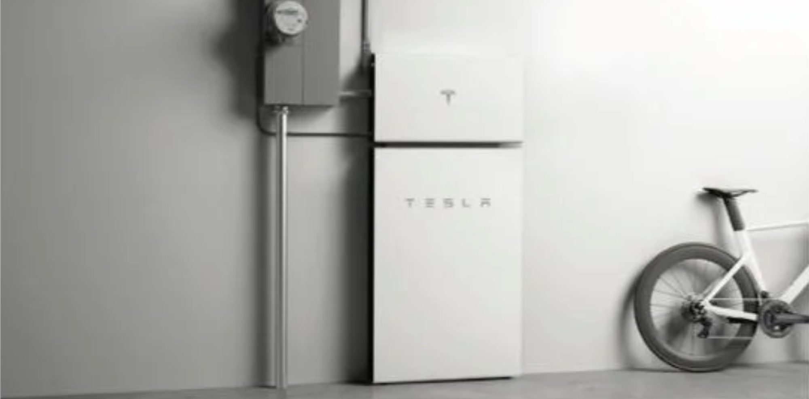

First Tesla Powerwall+ images and specs released
Tesla has now released the specs and the first images of a new Powerwall + installation after the power update announced by Elon Musk last week.
Last week, we reported on Tesla CEO Elon Musk discussing a significant power capacity increase for the home battery pack.
The first major update to the Powerwall 2 since it was unveiled back in 2016.
During Tesla’s earnings call on Monday, Musk said that the new Powerwall went into production in November of last year.
The CEO has been talking about the new version having about twice the power output of the older version.
Now Tesla has started sending spec sheets of what they are now calling the ‘Powerwall +’ to new buyers (via tangarg):